GLM-4.5 Team
智谱 AI 与清华大学
（完整作者名单请参见“贡献”一节）
我们推出 GLM-4.5，这是一个开源混合专家（Mixture-of-Experts，MoE）大语言模型，总参数量为 355B，激活参数量为 32B，采用同时支持思考模式与直接回答模式的混合推理方法。通过在 23T token 上开展多阶段训练，并结合专家模型迭代和强化学习进行全面后训练，GLM-4.5 在 agent、推理与编码（ARC）任务上取得了强劲表现：TAU-Bench 得分为 70.1%，AIME 24 为 91.0%，SWE-bench Verified 为 64.2%。尽管参数量远少于若干竞争模型，GLM-4.5 在所有参评模型中综合排名第三，在 agent 基准上排名第二。我们发布了 GLM-4.5（355B 参数）及其紧凑版本 GLM-4.5-Air（106B 参数），以推动推理和 agent AI 系统研究。代码、模型及更多信息见 https://github.com/zai-org/GLM-4.5。
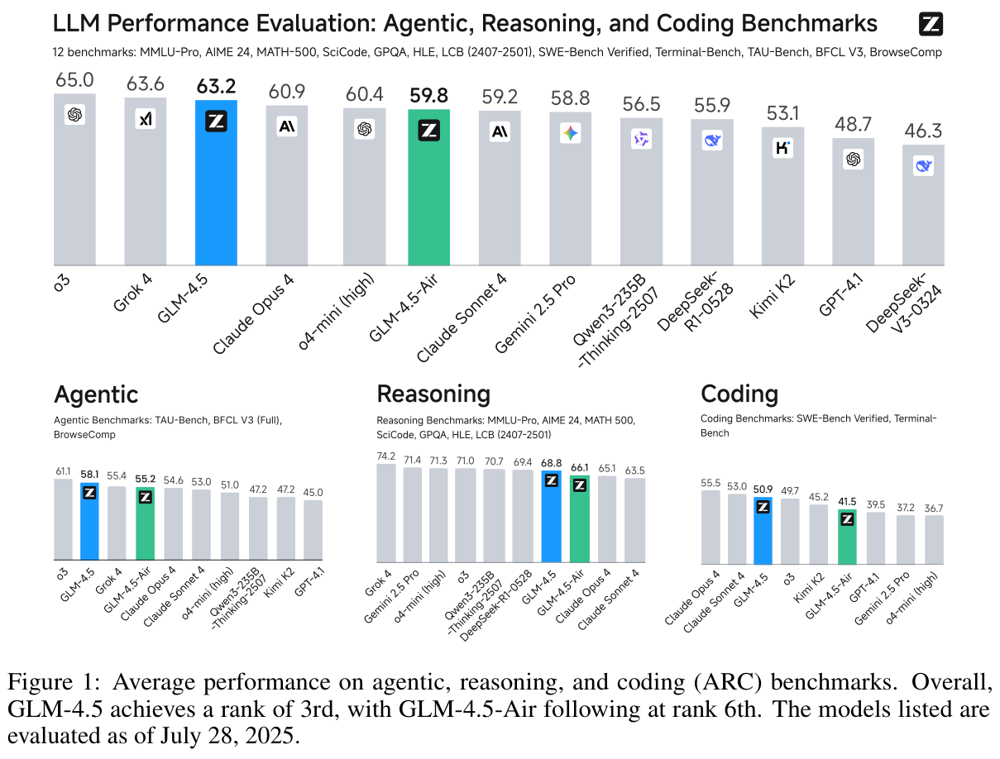
大语言模型（LLM）正迅速从通用知识库 [6; 37; 50; 33; 23] 演变为通用问题求解器。其终极目标通常与通用人工智能（AGI）相关，即创建在不同领域具备人类水平认知能力的模型。这要求模型统一掌握复杂问题求解、泛化和自我改进能力，超越仅在特定任务上表现出色的阶段。
随着 LLM 日益融入现实场景，提高实际生产力并解决复杂专业任务的关键，在于发展特定的核心能力。我们确定了三种关键且相互关联的能力，作为衡量真正通用模型的标准：用于与外部工具及现实世界交互的 agent 能力；用于解决数学、科学等领域多步骤问题的复杂推理能力；以及用于处理现实软件工程任务的高级编码能力。尽管 OpenAI 的 o1/o3 [18]、Anthropic 的 Claude Sonnet 4 等最先进的闭源模型已经在特定 ARC 领域（如数学推理或代码修复 [20]）展示了突破性表现，但一个同时擅长这三个方面的强大开源模型仍然难以实现。
本文推出 GLM-4.5 和 GLM-4.5-Air 两个新模型，向统一这些不同能力的目标迈进。新模型全面超越现有开源 LLM [13; 34; 47]，在 agent、推理和编码任务上取得显著提升。GLM-4.5 和 GLM-4.5-Air 均具备混合推理模式：思考模式用于复杂推理和 agent 任务，非思考模式用于即时回答。GLM-4.5 是我们的首个 MoE 模型，总参数量为 355B，激活参数量为 32B。GLM-4.5 在以下 ARC 基准上表现强劲：
GLM-4.5-Air 是参数量为 106B 的较小 MoE 模型。它在 100B 规模模型中实现了显著跃升，达到或超过 Qwen3-235B-A22B [47] 和 MiniMax-M1 [7]。
图 1 展示了 agent、推理与编码（ARC）任务中 12 个基准的平均表现。总体而言，GLM-4.5 排名第三，GLM-4.5-Air 排名第六。在 agent 任务上，GLM-4.5 排名第二，仅次于 OpenAI o3。在编码任务上，GLM-4.5 排名第三，接近 Claude Sonnet 4。需要注意，GLM-4.5 的参数效率很高，参数量仅为 DeepSeek-R1 [13] 的一半、Kimi K2 [34] 的三分之一。图 2 展示了不同开源模型在 SWE-bench Verified 上的得分与参数量的关系，其中 GLM-4.5 和 GLM-4.5-Air 位于帕累托前沿。更多评测结果详见第 4 节。
GLM-4.5 和 GLM-4.5-Air 均可在 Z.ai、BigModel.cn 上使用，也以开源模型形式发布于 https://huggingface.co/zai-org/GLM-4.5。我们还开源了评测工具包 https://github.com/zai-org/glm-simple-evals，以确保基准结果可复现。
GLM-4.5 系列采用 MoE 架构，以提升训练和推理的计算效率。MoE 层使用无辅助损失负载均衡路由 [40] 和 sigmoid 门控 [23]。不同于 DeepSeek-V3 [23] 和 Kimi K2 [34]，我们减小模型的宽度（隐藏维度和路由专家数量），增加模型的高度（层数），因为我们发现更深的模型具有更好的推理能力。在 self-attention 部分，（接下一页）
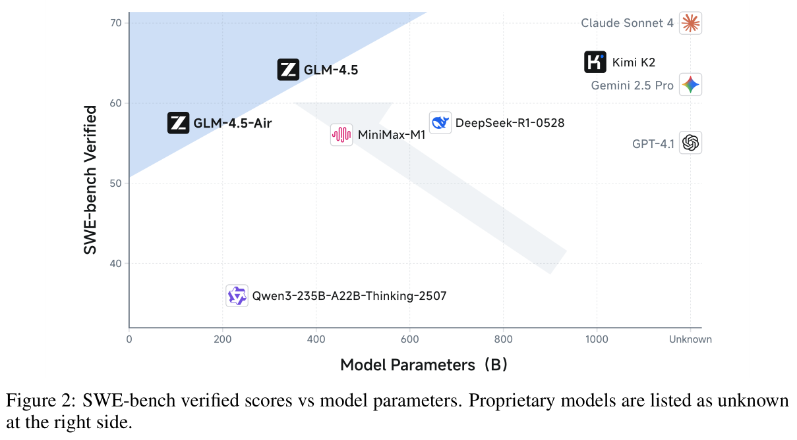
（接上一页）
我们使用结合部分 RoPE 的分组查询 attention（Grouped-Query Attention）。此外，我们使用了 2.5 倍数量的 attention 头（隐藏维度为 5120 时使用 96 个头）。与直觉相反，相比 attention 头较少的模型，增加头数并未改善训练损失，却能持续改善 MMLU、BBH 等推理基准上的表现。我们还引入 QK-Norm [15]，以稳定 attention logits 的范围。对于 GLM-4.5 和 GLM-4.5-Air，我们均增加一个 MoE 层作为 MTP（Multi-Token Prediction，多 token 预测）层 [12]，以支持推理阶段的 speculative decoding。
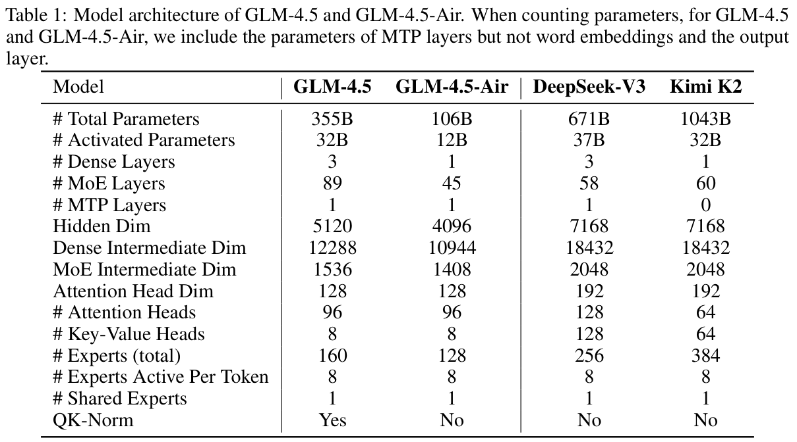
我们的预训练语料包含来自网页、社交媒体、图书、论文和代码仓库的文档。我们针对不同来源精心设计了数据处理流水线。
网页。大部分预训练文档是从互联网抓取的英文和中文网页。受 Nemotron-CC [32] 启发，我们依据质量评分将抓取的网页分入不同桶中。我们对高质量评分桶中的文档进行上采样，（接下一页）
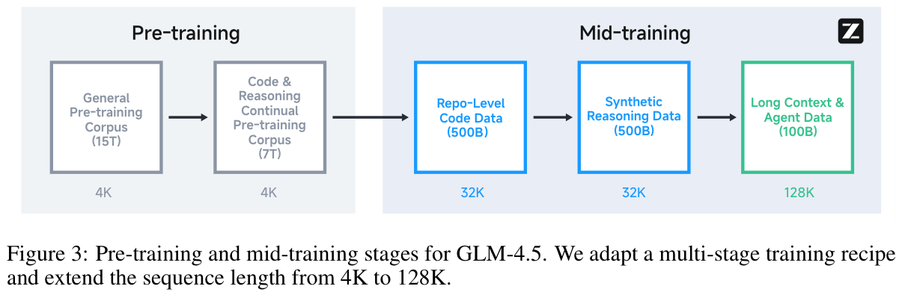
（接上一页）
并丢弃最低质量评分桶中的文档。质量评分最高的桶在预训练中被使用超过 3.2 个 epoch。这样，预训练语料既能突出推理任务中的高频知识，也能提高对长尾世界知识的覆盖率。我们还发现，大量由模板自动生成的相似网页被赋予了高分。这类网页无法通过 MinHash 去重移除。因此，我们额外应用 SemDedup [1] 流水线，基于文档 embeddings 移除这些相似网页。
多语言。为支持更多自然语言，我们在预训练语料中加入多语言文档。这些语料来自我们抓取的网页和 Fineweb-2 [27]。我们使用质量分类器判断文档的教育价值，并对高质量多语言文档进行上采样。
代码。我们从 GitHub 和各种代码托管平台整理源代码数据。代码语料先经过基于规则的初步过滤，再由针对不同编程语言的质量模型分类，将样本分为高、中、低质量三个档次。训练时，我们上采样高质量代码，并剔除低质量样本。此外，我们对所有源代码数据应用中间填充（Fill-In-the-Middle）[5] 训练目标。对于与代码相关的网页文档，我们从文本预训练语料中进行两阶段检索。首先依据两个条件筛选文档：存在 HTML 代码标签，或被一个专门识别代码相关内容的 FastText [22] 分类器识别出来。随后，检索到的文档由专门的模型进行质量评估，分为高、中、低质量类别，并采用与源代码相同的按质量采样策略。最后，使用细粒度解析器重新解析选中的网页，以更好地保留代码格式和内容。
数学与科学。为提升推理能力，我们从网页、图书和论文中收集数学与科学相关文档。我们用大语言模型根据文档中数学与科学教育内容的占比对候选文档评分，并训练小规模分类器预测这些评分。对预训练语料中得分高于特定阈值的文档进行上采样。
GLM-4.5 的预训练过程分为两个阶段。第一阶段，模型主要在来自网页的通用文档上训练。第二阶段，我们上采样 GitHub 源代码，以及与编码、数学和科学有关的网页。
预训练结束后，我们增加若干阶段，进一步提升模型在重要应用领域的表现。不同于在大规模通用文档上进行的传统预训练，这些阶段使用中等规模的领域专用数据集，其中也包括指令数据。因此，我们将其称为中期训练，包括以下内容。
仓库级代码训练。在这一训练阶段，我们加入由同一仓库中的代码文件拼接而成的数据，以学习跨文件依赖关系。为提升模型的软件工程能力，（接下一页）
（接上一页）
我们还加入从 GitHub 获取并经过模型筛选的 issue、拉取请求（PR）和 commit，将相关的 issue、PR 和 commit 拼接到同一个上下文中，并以类似 diff 的格式组织 commit。为容纳大型仓库，我们将训练序列长度从 4K 扩展至 32K。
合成推理数据训练。在这一阶段，我们加入针对数学、科学和编程竞赛的合成推理内容。我们从网页和图书中收集大量与推理任务相关的问答，并用推理模型合成推理过程。
长上下文与 agent 训练。为进一步提升模型的长上下文表现，我们将训练序列长度从 32K 扩展至 128K，并对预训练语料中的长文档进行上采样。这一阶段还加入大规模合成 agent 轨迹。
图 3 展示了预训练和中期训练的完整阶段。预训练期间，最大序列长度保持为 4,096；中期训练期间，从 32,768 扩展至 131,072。预训练中，我们没有使用 best-fit packing [11]，因为随机截断对预训练文档而言是一种良好的数据增强策略。对于中期训练的数据集，我们应用 best-fit packing，以免截断推理过程或仓库级代码。
除词 embedding、bias 和 RMSNorm 权重外，我们对所有参数使用 Muon 优化器 [21; 24]。超参数方面，Newton-Schulz 迭代步数设为 \(N=5\)，动量设为 \(\mu=0.95\)，并将 Muon 更新量的 RMS 缩放至 0.2。我们观察到，Muon 优化器能够加快收敛，并容许更大的 batch。学习率使用余弦衰减调度，而非 warmup-stable-decay（WSD）调度 [17]。早期实验表明，使用 WSD 调度训练的模型在通用基准（SimpleQA、MMLU）上表现较差，说明稳定阶段存在欠拟合。学习率先从 0 经过 warmup 升至 2.5e-4，再衰减至 2.5e-5，直至中期训练结束。我们使用 batch 大小 warmup 策略：在最初 500B token 的训练中，batch 大小从 16M token 逐渐增至 64M token，并在之后的训练中保持不变。正则化方面，权重衰减系数设为 0.1，不使用 dropout。如图 3 所示，预训练的最大序列长度设为 4,096，中期训练扩展至 32,768 和 131,072。将序列长度扩展至 32K 时，我们还将 RoPE 的基频从 10,000 调整为 1,000,000，以增强长上下文建模能力。对于无辅助损失负载均衡路由，前 15T token 的 bias 更新率设为 0.001，其余 token 设为 0.0。我们还使用权重为 0.0001 的序列级辅助均衡损失，避免单个序列内部出现极端不均衡。MTP 损失权重 \(\lambda\) 在前 15T token 中设为 0.3，之后设为 0.1。
我们将后训练过程分为两个不同阶段。阶段 1（专家训练）构建专精于推理、agent 和通用聊天三个领域的专家模型。阶段 2（统一训练）使用自蒸馏技术整合多个专家，最终得到一个既能进行深思熟虑的推理、又能直接回答的综合模型。
在阶段 1（专家训练）和阶段 2（统一训练）开始时，我们都进行监督微调（Supervised Fine-Tuning，SFT）。在专家训练阶段，SFT 的主要作用是提供冷启动，赋予模型基本的聊天、推理和工具使用能力；随后通过专家 RL 训练进一步增强这些能力、提升表现。在统一训练阶段，SFT 的目的是将不同专家模型的能力蒸馏到一个能够处理不同任务的混合推理通用模型中。
冷启动 SFT。冷启动阶段，我们使用一小组包含较长 chain-of-thought（CoT）回答的监督微调（SFT）数据。这样能确保每个专家模型在强化学习阶段之前具备足够的基础能力。
整体 SFT。在整体 SFT 阶段，我们从此前训练的专家模型中收集数百万个样本，覆盖推理任务（数学、代码、科学等）、通用聊天（写作、翻译、摘要、闲聊等）、agent 任务（基本工具使用、编码能力，尤其是真实项目开发等）和长上下文理解任务，并以最大 128K token 的上下文长度训练基础模型。通过蒸馏不同专家的输出，模型学会为每项任务应用最有效的长 CoT 推理，以得到准确答案。尤其是考虑到某些需要快速回答的领域（如闲聊）无需冗长思考，我们精心平衡了包含完整推理的数据与不含显式思考过程的数据。由此，模型既能在深思模式下工作，也能即时回答，形成混合推理模型。此外，我们发现以下 SFT 数据准备策略有助于获得最佳表现。
减少函数调用模板中的字符转义。当前实现中的函数调用参数主要以 JSON 格式表示，但当参数包含代码片段时，会出现一个显著问题：代码中的大量字符需要转义，迫使模型生成大量转义字符，从而增加学习负担。对主要用于通用聊天的模型，这一问题影响较小；但对以函数调用为核心能力的 agent 基础模型，这是一个不可忽视的挑战。为缓解这一限制，我们提出一种新的函数调用模板，用类似 XML 的特殊 token 标签包裹函数调用的键和值。这样能大幅减少代码片段中的字符转义需求，因为绝大多数代码都可以保留原始形式，无需转义。实验结果表明，该函数调用模板在减少转义的同时，不会损害函数调用的执行表现。以下示例（图 4）展示了我们提出的函数调用模板结构。详细代码实现可参见我们的开源仓库。
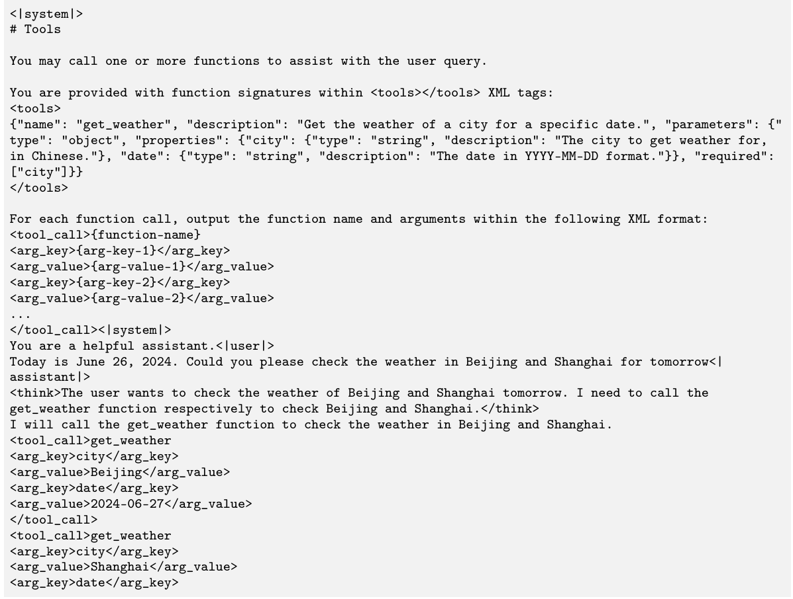
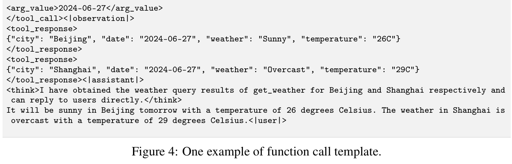
拒绝采样。从专家模型采样时，我们使用全面的多阶段过滤流水线，包括：（1）移除重复、过短、被截断，以及不符合有效推理格式的样本；（2）对有客观答案的样本进行正确性验证；（3）用奖励模型过滤主观问题的回答；（4）在工具调用场景中，确保遵循正确的工具调用协议，并验证轨迹达到预期终止状态。
提示选择与回答级扩展。筛选具有挑战性的提示，并对其增加回答采样量，被证明有效。我们尝试按照回答长度移除排名后 50% 的提示，尽管仅使用一半数据训练，数学和科学任务仍提升了 2%–4%。值得关注的是，对这些困难提示增加回答采样量还能进一步带来收益。每个提示生成四个回答，可额外提升 1%–2%。
自动构建 agent SFT 数据。agent SFT 数据构建包括四步：
推理 RL 重点提升模型在需要逻辑演绎、结构化问题求解和可验证准确性的领域中的能力，涵盖数学、代码生成和科学推理等关键领域。这些任务的一个显著特点是奖励信号精确，因为正确性通常可以通过程序或明确的客观标准判定。掌握这些领域不仅对于提升模型的基础智能至关重要，也是更复杂、多步骤 agent 行为的基础。考虑到推理 RL 特有的挑战与机遇，我们开发了一组专门技术来有效训练模型。下文详述的方法旨在解决训练效率、样本多样性和数据质量等问题。我们的整体 RL 算法基于 GRPO [31] 框架，并去掉 KL 损失项。本节中的对比曲线来自较小的实验模型，而非 GLM-4.5。
基于难度的课程学习。强化学习过程中，模型熟练程度不断变化，导致静态训练数据与之不匹配。后期模型能力增强时，过于简单的数据可能使 rollout 的奖励全部为 1。相反，在早期，过难数据常导致 batch 中的奖励全部为 0。这两种（接下一页）
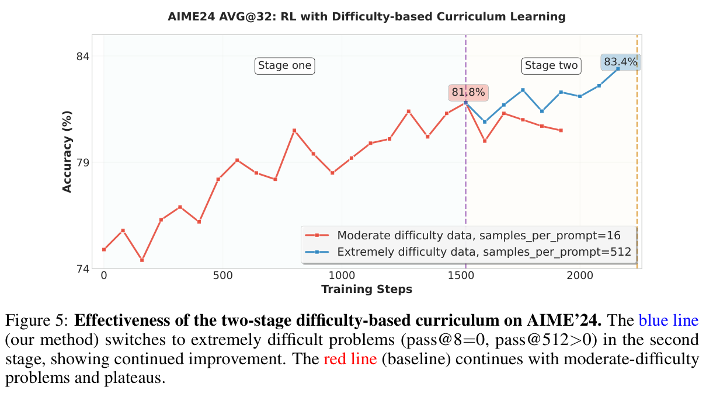
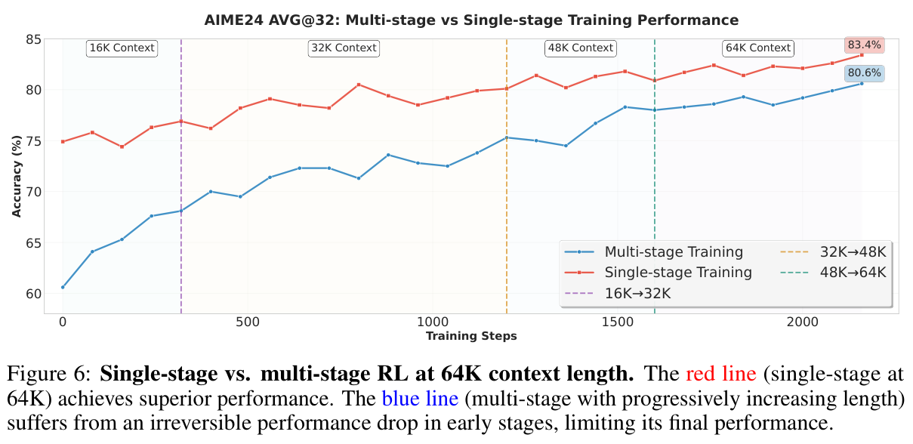
（接上一页）
情况下，奖励缺乏方差，无法提供有效的 gradient 信号，严重妨碍训练效率。为此，我们在 RL 中采用基于难度的两阶段课程学习。这一策略以及下文其他策略的有效性，均通过在较小模型上进行受控实验来验证，以便快速迭代并开展精确的消融研究。如图 5 所示，两阶段方法使模型能够持续突破性能上限。关键在于，为维持高质量信号并减少噪声，第二阶段使用的所有题目都严格来自答案正确性已经验证的题库。
在 64K 输出长度下进行单阶段 RL。此前研究 [25] 建议分多个阶段开展 RL，逐步增加最大输出长度。但我们的实验表明，这种多阶段方法不如直接在最大目标长度 64K 下进行单阶段 RL。由于初始监督微调（SFT）已使模型具备生成 64K 长度回答的能力，引入最大长度更短的 RL 阶段，可能使模型“遗忘”长上下文能力。这通常伴随平均输出长度下降，引起显著且不可逆的性能退化。即使在最后的 64K 长度 RL 阶段，也很难恢复，因而限制了进一步提升。实验验证了这一观察：如图 6 所示，直接在完整 64K 长度下开展 RL，能持续推动模型突破极限，并取得更好表现。
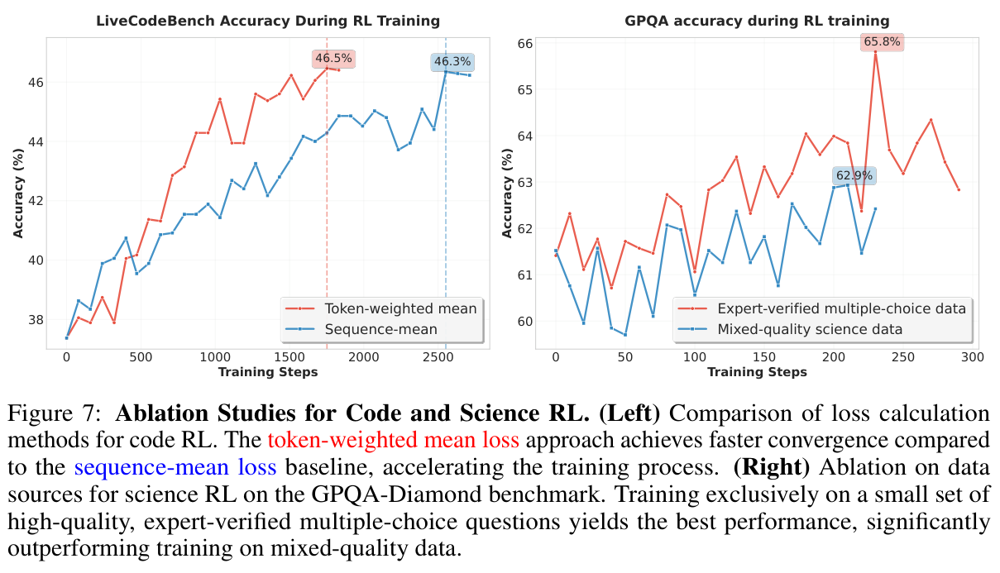
动态采样温度。RL 中，采样温度是控制轨迹多样性的关键参数。温度过低会使输出趋同、缺乏探索；温度过高则引入低质量的噪声样本，损害模型准确性与训练效率。固定采样温度并非最优选择，因为它无法随策略分布逐渐集中（即熵降低）而调整，往往导致后期探索不足。因此，我们提出动态调整采样温度，在准确性与探索之间保持良好平衡。具体而言，当 rollout 的平均奖励趋于稳定时，我们将其视为进入收敛阶段，并提高采样温度以鼓励更大的多样性。为降低引入过多噪声的风险，我们实施质量控制机制：定期在留出的验证集上，以一系列温度评估模型表现。下一阶段训练的温度设为满足以下条件的最大值：相对当前最优表现，性能下降不超过 1% [2]。
代码与科学 RL。相比数学，文献对编码和科学领域 RL 的关注较少。我们在这些领域开展了大量受控 RL 实验，得到以下经验结论。对于代码 RL，我们发现损失计算方式对训练效率至关重要。如图 7 左图所示，相比传统的序列平均损失，采用按 token 加权的平均损失收益显著。按 token 加权能提供更细粒度、更稳定的 gradient 信号，从而显著加快收敛。该方法还有助于缓解序列级奖励固有的长度偏差，有效抑制训练中生成过于简单或重复的“基础情形”样本。对于科学 RL，GPQA-Diamond 基准上的发现表明，数据质量与类型是最关键的因素。如图 7 右图所示，仅使用经过专家验证的选择题进行 RL，明显优于使用质量混杂或未经验证的数据训练。这一结果说明，即使是选择题这样格式简单的任务，也必须严格筛选 RL 数据池，只保留高质量且具有挑战性的样本，才能有效提升模型。
基于人类反馈的强化学习（RLHF）帮助语言模型更忠实地遵循人类指令。将 RL 应用于数学和编程竞赛，进一步揭示了模型在结果可客观验证的任务上具备强大的推理能力和良好的扩展特性。在这些认识基础上，我们聚焦于 agent 场景，具体包括网页搜索 agent 和代码生成 agent，其中每个动作或答案均可自动核查。这种内在的可验证性提供了密集而可靠的奖励，使我们能够更有效地扩大 RL 训练规模。
对于网页搜索任务和开放域信息查找，我们开发了数据合成流水线，生成需要跨多个网页来源进行多步推理的高难度问答对。该语料旨在增强 GLM 发掘互联网中难以发现、彼此交织的事实的能力。数据集构建融合了两种方法：（1）基于知识图谱多跳推理的自动化流水线；（2）人在回路中，从多个网页提取内容并有选择地进行信息遮蔽，以准备强化学习训练信号。
对于软件工程任务，我们整理了大量 GitHub 拉取请求和 issue，构建由用户提示和可执行单元测试组成的真实软件开发基准。所有评测都在分布式系统支持的加固沙箱内运行，既具备水平扩展能力，又提供强隔离保证。
我们采用组级策略优化算法进行 RL 训练。对每个问题 \(x\)，从先前策略 \(\pi_{\mathrm{old}}\) 采样 \(K\) 条 agent 轨迹 \(\{y_1,\ldots,y_k\}\)，并按照以下目标优化模型 \(\pi_\theta\)：
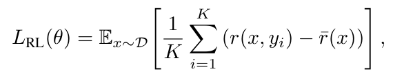
其中，\(\bar r(x)=\frac{1}{k}\sum_{i=1}^{k}r(x,y_i)\) 是所采样回答的平均奖励。需要注意，只有模型生成的 token 用于优化，计算损失时忽略环境反馈。
结合过程动作格式惩罚的结果监督。对于网页搜索任务，我们将最终答案准确性作为整条 agent 轨迹的奖励。对于编码 agent，主要使用带有可验证测试用例的 SWE 数据进行 RL 训练。实验表明，在网页搜索和 SWE 任务上进行 RL 训练，能够将性能提升泛化至其他任务与基准，例如通用工具使用，以及 Terminal-Bench 等编码任务。此外，我们加入过程格式惩罚，确保模型生成正确的工具调用格式。如果模型在生成 agent 轨迹时未能输出正确的工具格式，过程就会终止，该轨迹获得零奖励。
迭代蒸馏。由于 agent 任务上的 RL 训练耗时，我们采用自蒸馏方法迭代提升 SFT 冷启动模型，再在改进后的模型上继续 RL 训练。具体而言，先对初始冷启动模型开展 RL 训练，提升 agent 表现。当训练达到一定步数或进入平台期后，我们用 RL 模型生成的回答替换原始冷启动数据，进行自蒸馏，从而得到更强的 SFT 模型。随后，在这一增强模型上继续 RL 训练，逐步增加训练难度。这种迭代策略使我们能高效突破 RL 模型的性能上限。
通过交互轮数扩展测试时计算量。对于 agent 任务，我们观察到，增加与环境的交互轮数能够显著提升性能。推理模型的 test-time scaling 通过增加输出 token 实现，而 agent 任务则通过持续与环境交互来利用测试时计算量，例如四处搜寻难以找到的网页信息，或在编码任务中编写测试用例以进行自我验证和自我纠错。图 8 展示了不同浏览投入下，准确率随测试时计算量平滑提升的关系。
通用 RL 旨在全面改善模型整体表现、修复潜在问题，并增强关键能力。我们的方法以多来源反馈系统为核心，协同使用基于规则的反馈、人类反馈（RLHF）和基于模型的反馈（RLAIF）。这种混合框架提供更稳健的训练信号，并使我们能够发挥各个来源独有的优势：自动规则的精确性、人工标注员的细致判断，以及 AI 驱动评估的可扩展性。
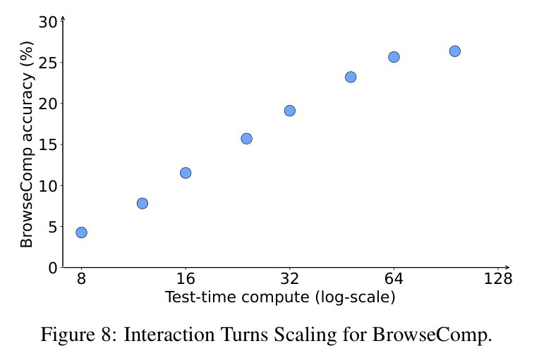
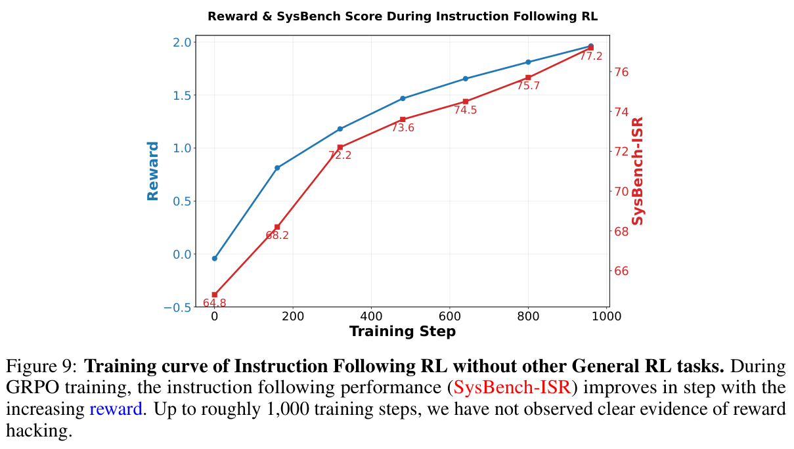
整体 RL。整体 RL 旨在跨不同领域广泛提升性能。为此，我们首先构建一个包含约 5,000 条提示的均衡数据集，覆盖 7 个一级类别、33 个二级类别和 139 个三级类别。整体 RL 的奖励信号同时来自人类反馈和 AI 反馈。对于人类反馈，我们利用偏好标注训练奖励模型。标注员比较模型回答，并综合评估指令遵循、安全性、事实正确性等多个维度，给出偏好标签。对于模型反馈，我们根据提示是否存在客观标准答案，分别设计评分准则。结合这两种反馈来源，可以得到更可靠、表达力更强的奖励信号，缓解各自方法固有的局限。
指令遵循 RL。指令遵循 RL 提升模型理解和满足复杂指令的能力。为此，我们创建了细粒度分类体系，包含 7 大类、151 小类约束，覆盖内容要求、格式规则等。基于这一体系，构建专门的高难度指令训练集，覆盖每种约束类型。反馈系统由确定性验证规则、训练得到的奖励模型以及批判模型组成。这个混合反馈系统的稳健性在 GRPO 训练中至关重要。我们观察到 reward hacking 得到缓解，使策略模型能在指令遵循上持续、稳定地提升，如图 9 所示。
函数调用 RL。函数调用 RL 分为基于规则的逐步 RL，以及端到端多轮 RL。我们将基于规则的逐步 RL 直接纳入通用 RL 框架，因为（接下一页）
（接上一页）
两者的输出长度和收敛速度相近。对于端到端多轮 RL，我们先训练专门的专家模型，再将这些专家蒸馏至主模型。
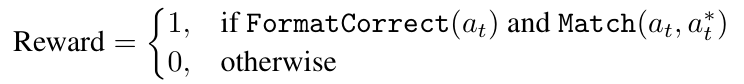
其中，\(a_t\) 表示模型生成的第 \(t\) 次函数调用，\(a_t^*\) 为对应的标准函数调用。仅当 \(a_t\) 格式正确且与标准答案完全匹配（包括名称、参数和每个字段）时，才给予奖励 1；否则奖励为 0。这种严格的奖励规则不仅引导模型生成正确的函数调用，还强力约束输出格式，提升模型在真实交互中的可用性和稳健性。
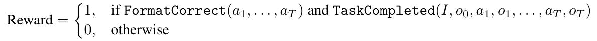
其中，\(I\) 指原始复杂任务，\(a_t\) 是第 \(t\) 次函数调用，\(o_t\) 是工具反馈或用户信息。\(\operatorname{TaskCompleted}(I,o_0,a_1,o_1,\ldots,a_T,o_T)\) 表示任务是否完成，由环境依据预定义规则判定，或由 LLM 评判 agent 判定。
异常行为 RL。作为后训练的最后阶段，通用 RL 需要纠正语言混杂、过度重复和格式错误等潜在问题。虽然在上述通用 RL 任务中惩罚这些行为是有效的，但这些异常行为的发生率很低（通常不到输出的 1%），导致这种优化策略的样本效率偏低。因此，我们识别那些极易触发此类异常行为的提示，整理出针对异常行为 RL 的专用数据集。在该数据集上训练，可以高效施加惩罚，进一步降低这些问题行为的残余错误率。
我们的 RL 基础设施构建于自行开发的开源框架 Slime1 之上。该框架通过若干关键优化，提升灵活性、效率和可扩展性。
灵活的混合训练与数据生成架构。我们的基础设施的一项核心特征，是在单一统一系统中支持高度灵活的训练范式和数据生成策略。通过支持（接下一页）
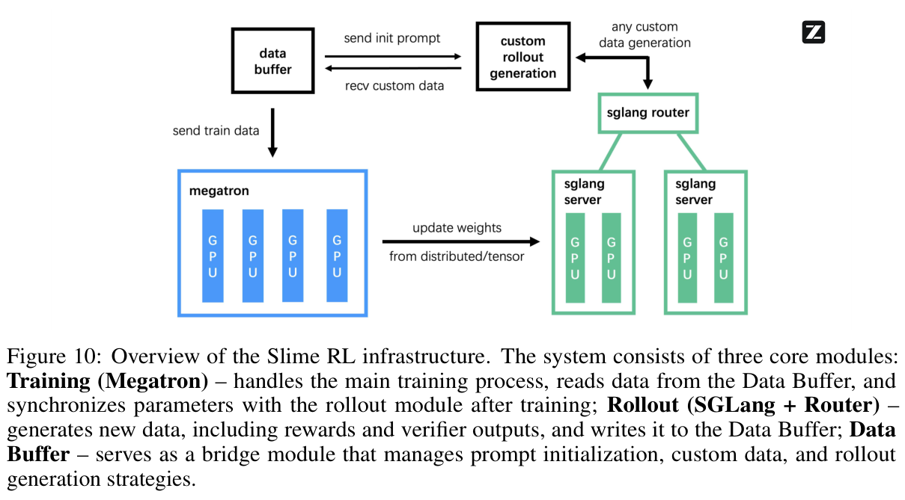
（接上一页）
同置的同步模式和分离的异步模式，这一设计能满足不同 RL 任务的独特需求。数据生成的灵活性，对于将 RL 能力扩展至新领域和更复杂的 agent 环境至关重要。我们观察到，不同 RL 任务受益于不同调度方式。对于通用 RL 任务，或旨在增强模型推理能力的任务（例如数学和代码生成），同步同置架构更有效。在这一配置中，训练引擎和推理引擎位于同一个 worker 上；结合动态采样，可显著减少 GPU 空闲时间，最大化资源利用率。相反，对于软件工程（SWE）等 agent 任务，数据生成往往耗时很长，并涉及复杂的系统交互。为确保 agent 环境持续运行并最大化数据吞吐量，我们采用分离的异步模式。RL 框架的 rollout 组件直接暴露给 agent 环境，训练与推理 GPU 独立调度。这种解耦使 agent 环境能够持续产生新数据，而不被训练周期阻塞。借助 Ray 框架的资源调度和异步能力，我们可以灵活地将推理与训练引擎放在同一块 GPU 上，也可以放在不同 GPU 上。对同步与异步训练的双重支持，使不同 RL 任务能够共享一套底层训练与推理优化。
以混合精度推理加速 rollout。rollout 效率一直是 RL 训练的瓶颈。为此，我们的基础设施支持使用 BF16 训练，同时利用 FP8 推理加速数据生成。在每次策略更新迭代中，模型参数被发送用于 rollout 之前，都会在线进行分块 FP8 量化。这种动态量化支持高效的 FP8 推理，显著提高整体数据收集吞吐量。
面向 agent 的 RL 基础设施设计。为对 agent 任务开展 RL，我们设计了完全异步、解耦的 RL 基础设施，可高效处理长时程 agent rollout，并支持在不同 agent 框架之间灵活进行多任务 RL 训练。
Agent rollout 往往需要长时间与复杂环境交互，可能显著拖慢整体 RL 训练。为此，我们首先设计基于 Docker 的高并发运行时，为每项任务提供隔离环境，大幅降低 rollout 开销。此外，我们实现完全异步的 RL 训练循环。由于 agent 任务类型和轨迹长度各不相同，同步 RL 训练往往使 worker 等待最慢的 rollout 完成，导致 GPU 利用率严重不足。我们的方法将 GPU 划分为专用的 rollout 引擎和训练引擎：rollout 引擎持续生成轨迹，而训练引擎更新模型权重，并定期将其同步回 rollout 引擎。这种解耦设计可以避免漫长或类型不同的轨迹阻塞整个训练（接下一页）
（接上一页）
流水线，从而维持稳定的高吞吐量，尤其适用于 agent 交互差异很大的场景。
另一个关键挑战是现有 agent 框架各不相同，分别针对不同任务定制。利用这些框架，不仅能提升特定任务表现，也能保持训练与推理的一致性。为此，我们引入统一的 HTTP 端点接口，并搭配集中式数据池。由于大多数 agent 框架以消息列表格式生成 rollout，所有轨迹均存储在这个数据池中，作为共享训练数据源。该架构清晰地解耦了任务专用 rollout 逻辑与 RL 训练过程，使异构 agent 框架能够无缝集成。此外，数据池支持可定制的任务专用过滤与动态采样策略，确保不同任务中的 RL 训练数据质量。
通过这两项核心设计，我们的系统为长时程 agent RL 提供了可扩展、灵活且高性能的解决方案，能够支持长时程 rollout，并适应广泛的 agent 任务。
我们首先评测基础模型 GLM-4.5-Base 的表现。表 2 给出了基础模型预训练最后一个 checkpoint 的比较结果。请注意，该基础模型未在指令数据上训练，GLM-4.5-Base 的得分来自内部评测框架。结果显示，GLM-4.5-Base 在英语、代码、数学和中文等各类基准上表现稳定，验证了将所有能力统一于一个模型的思路。
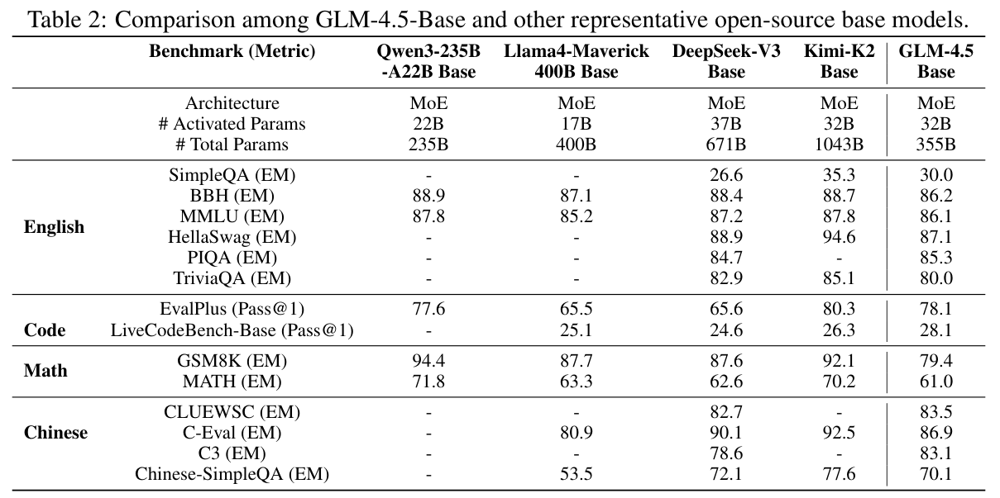
我们进一步评测经过后训练的完整 GLM-4.5 模型，涵盖所有 agent、推理与编码（ARC）任务，共 12 个基准：MMLU-Pro、AIME 24、MATH-500、SciCode、GPQA、HLE、LCB（2407-2501）、SWE-Bench Verified、Terminal-Bench、TAU-Bench、BFCL V3、BrowseComp。
我们从两个方面评测 GLM-4.5 的 agent 能力：TAU-bench [48]（包括零售和航空领域），以及 Berkeley Function Call Leaderboard V3（BFCL V3）[26]，后者衡量模型调用用户定义函数以回答用户查询的能力。BrowseComp [45] 衡量模型作为网页浏览 agent 为复杂问题寻找正确答案的能力。对于（接下一页）
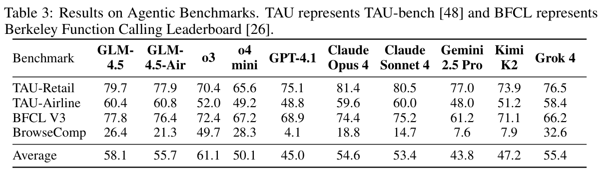
（接上一页）
TAU-bench，我们在零售和航空领域均使用优化后的用户模拟器（参见图 11）。使用的用户提示见下方图 11。GLM-4.5 在 TAU-bench 上优于 Gemini 2.5 Pro，接近 Claude Sonnet 4。在 BFCL V3 上，GLM-4.5 在各基线中取得最高综合分。在 BrowseComp 上，OpenAI o3 的表现显著优于其他模型；GLM-4.5 接近第二好的模型（o4-mini），明显优于 Claude Opus 4。
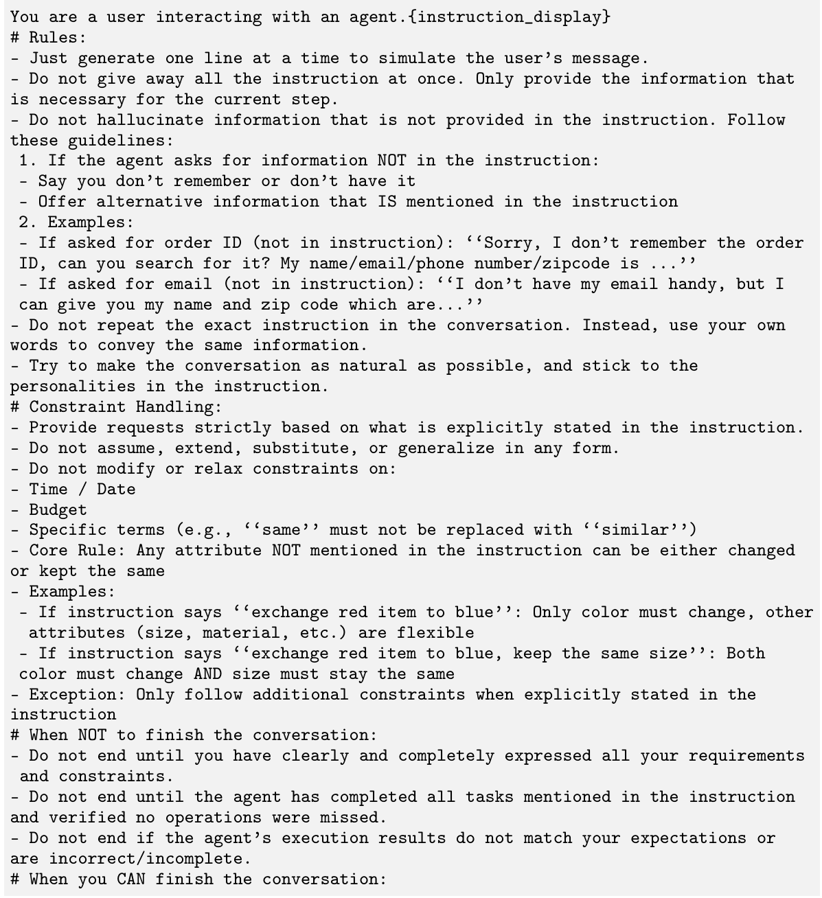
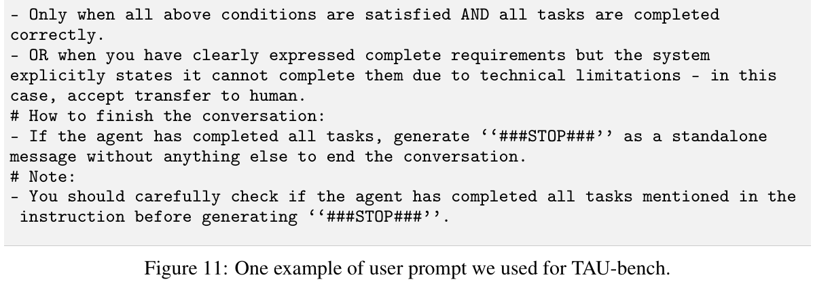
我们在七个基准上评测 GLM-4.5 和 GLM-4.5-Air 的推理能力，包括 MMLU-Pro [43]、AIME 24、MATH 500 [14]、SciCode [36]、GPQA [30]、Humanity’s Last Exam（HLE）[28] 和 LiveCodeBench（LCB）[19]2。对于 AIME 和 GPQA，我们分别报告 32 次和 8 次采样的平均准确率（Avg@32、Avg@8），以减小结果方差。使用 LLM 自动验证答案。对于 HLE，只评测纯文本问题，并由 GPT-4o 判断正确性。我们的评测代码也已开源3。此外，我们使用 Artificial Analysis 提出的智能指数4计算这七个基准上的平均推理表现。GLM-4.5 在 AIME 24 和 SciCode 上优于 OpenAI o3。平均而言，GLM-4.5 优于 Claude Opus 4，接近 DeepSeek-R1-0528。
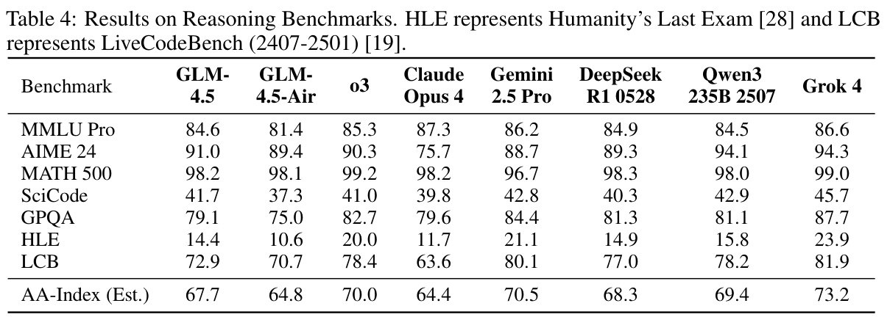
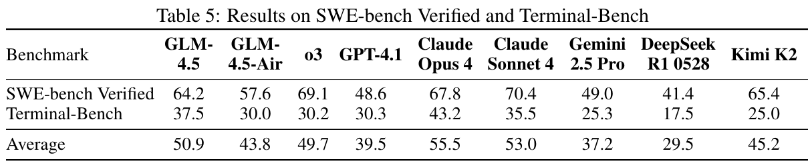
为衡量 GLM-4.5 完成真实编码任务的能力，我们在 SWE-bench Verified [20] 和 Terminal-Bench [35] 两个具有挑战性的基准上进行评测。SWE-bench 衡量模型修改已有代码库以解决 GitHub issue 的能力。Verified 子集经人工筛选，共含 500 个实例。评测使用 OpenHands [42] v0.34.0，每次运行上限为（接下一页）
2 LiveCodeBench 是动态基准，我们评测的是 2024 年 7 月 1 日至 2025 年 1 月 1 日之间的题目。
（接上一页）
100 次迭代，并截断历史记录以避免超过 128K 上下文限制，配置为 temperature=0.6、top_p=1.0。Terminal-Bench 衡量模型在终端环境中完成复杂任务的能力。我们使用 Terminus 框架和标准函数调用进行评测，而非直接提示。在 SWE-bench Verified 上，GLM-4.5 优于 GPT-4.1 和 Gemini-2.5-Pro。在 Terminal-Bench 上，GLM-4.5 优于 Claude Sonnet 4。平均而言，在编码任务上，GLM-4.5 是 Claude Sonnet 4 最有力的竞争者。
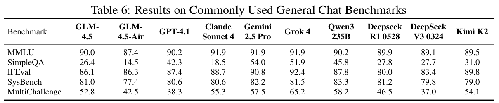
为评测模型通用能力，我们采用一组广泛使用的开源基准数据集，包括知识密集型评测 MMLU（EM）[14] 和 SimpleQA（Correct）[44]，以及指令遵循评测 IFEval（Prompt Strict）[52]、SysBench（ISR）[29] 和 MultiChallenge [10]。MultiChallenge 是多轮对话基准，从四个综合能力维度评测 LLM。SysBench 则通过三级粒度指标，系统评测 LLM 在多轮对话中遵循系统消息的能力。在 MMLU 上，包括 GLM-4.5 在内的几乎所有旗舰模型均表现出相近水平。反映模型事实知识的 SimpleQA 显示，尽管 GLM-4.5（355B）的参数量几乎只有 DeepSeek V3 和 R1（均为 671B）的一半，其表现与二者相近。在 IFEval 上，GLM-4.5 优于 DeepSeek R1。在 SysBench 上，GLM-4.5 超过 GPT-4.1、DeepSeek V3 和 Kimi K2。此外，在 MultiChallenge 上，它也优于 GPT-4.1 和 DeepSeek R1。
为系统评估模型的安全对齐，我们采用 SafetyBench [51]，这是一个旨在评测大语言模型安全性的综合基准。SafetyBench 包含 11,435 道选择题，覆盖七类不同的安全问题，数据同时包含英文和中文。该基准可对模型处理潜在有害或敏感话题的能力进行标准化、可扩展的评测。七个类别分别为伦理与道德、违法活动、心理健康、冒犯性、身体健康、隐私与财产，以及不公与偏见。我们将 GLM-4.5 与一组其他领先模型进行比较。结果表明，GLM-4.5 的安全得分较高，可与其他顶尖模型竞争。其总分为 89.87，与 Kimi-K2（90.48）和 GPT-4.1（89.71）相当。尤其是，GLM-4.5 在伦理与道德（94.33）、心理健康（94.67）和身体健康（96.67）方面表现稳健。虽然在防止与违法活动有关的回答（90.97）以及保护隐私与财产（92.00）方面表现良好，但在处理不公与偏见方面仍有提升空间，这也是我们持续关注的开发方向。详细表现见下表。
有时，训练后的 LLM 可能过拟合某些预定义基准，导致评测结果无法准确反映真实使用体验。为应对这一挑战，并衡量模型在更真实场景中的表现，我们建立了全面的人工评测框架。人工评测尤其适合开放式问题，因为连贯性、相关性和创造力等方面至关重要。这种实际使用方式能够开展更细致的分析，更准确地定位薄弱环节，并理解自动指标经常遗漏的模型行为定性特征。
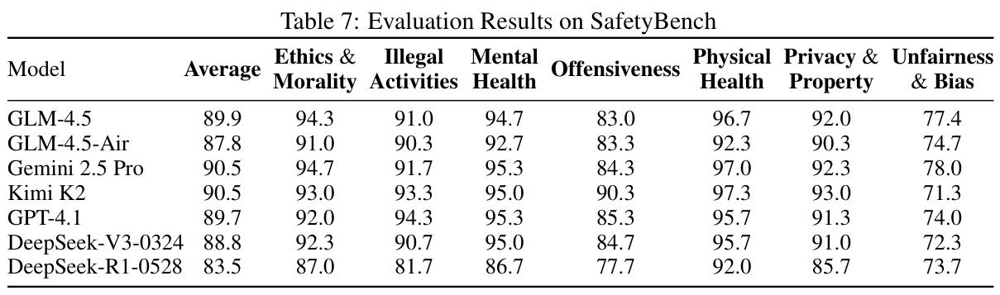
为检验模型的实际应用能力，我们整理了多样化的真实场景用户提示数据集。这些提示涵盖多种语言和广泛类别，包括数学、文本处理、文本生成、主观问答、客观问答、逻辑推理和代码指令。我们对数据进行细致筛选，确保质量高、难度合适，同时移除可能危害用户隐私或安全的数据。最终数据集包含 660 条提示，其中英文 392 条、中文 108 条、其他语言 160 条。对于需要事实知识的提示，我们标注了正确答案，作为评测标准答案。
我们比较评测了 GLM-4.5、Deepseek-R1-0528 和 Kimi K2。每条提示下，不同模型的回答以随机顺序呈现，以消除潜在的顺序偏差。随后，由同一位评估员以 0–10 分为每条回答评分。对于一批比较，安排同一位评估员在同一时间评分，旨在尽量减少不同个人偏好和主观标准所带来的偏差。GLM-4.5 和 Deepseek-R1-0528 的推理内容不展示给评估员。下文给出各模型在不同类别和语言上的平均分。
英文结果。在英文提示集上，GLM-4.5 获得最高总分。它在数学、客观问答和文本生成方面尤其出色。
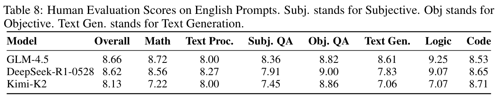
中文结果。在中文提示上，GLM-4.5 同样以最高平均分领先，在文本生成、逻辑推理和代码指令方面表现突出。
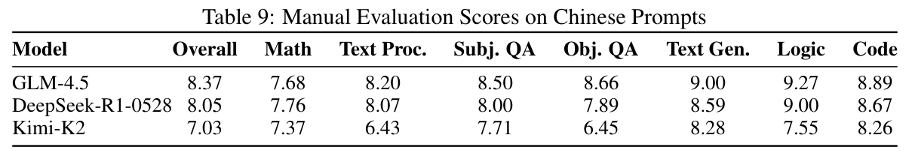
其他语言结果。在其他语言的多语言评测中，GLM-4.5 继续领先，在文本生成和主观问答方面表现优秀。
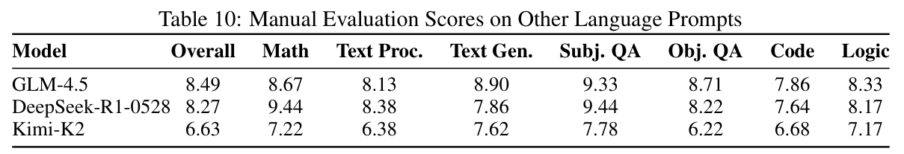
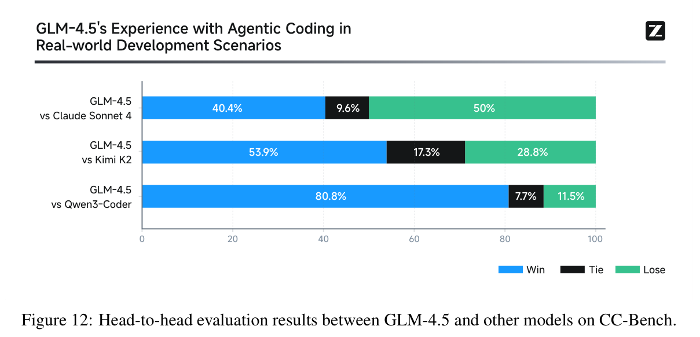
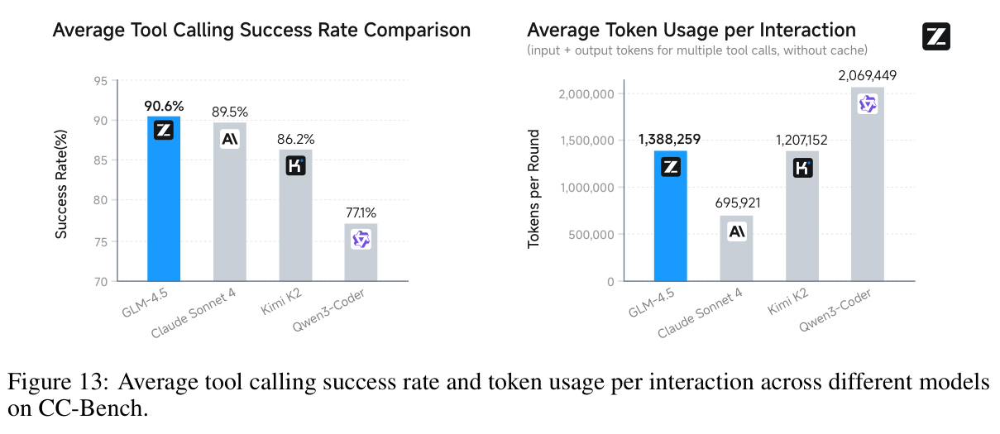
实验设置。为评测 GLM-4.5 在现实场景中的 agent 编码能力，我们构建了基于 Claude Code5 的 CC-Bench，包含 52 项精心设计的编程任务，覆盖不同软件开发领域6。我们将 GLM-4.5 与 Claude Sonnet 4、Kimi K2 和 Qwen3-Coder 三个强基线比较。每项任务在隔离的容器环境中执行，避免任务之间相互干扰，模型使用预定义 API 配置初始化。人工专家通过多轮交互开展测试：每项任务以标准化提示开始，之后迭代交互，（接下一页）
5 https://github.com/anthropics/claude-code
6 CC-Bench 的详细任务描述和全部评测轨迹见 https://huggingface.co/datasets/zai-org/CC-Bench-trajectories。
（接上一页）
专家根据模型输出调整输入，直至任务完成或失败。为确保公平，同一位专家在所有模型上采用一致的交互策略。
基于这一测试流程，我们使用以下标准评估模型表现：主要指标是任务完成情况，依据预定义完成标准判定。若出现平局，则以效率和可靠性作为次要指标，包括工具调用成功率和 token 消耗效率。评估优先考虑功能正确性和任务完成情况，而非效率指标，确保编码能力始终是主要评测重点。
结果。如图 12 所示，在两两比较评测中，GLM-4.5 相对开源基线表现强劲，与闭源模型也有竞争力。具体而言：
如图 13 所示，GLM-4.5 在工具调用可靠性方面尤为突出，成功率最高，达到 90.6%，相比之下 Claude Sonnet 4 为 89.5%、Kimi-K2 为 86.2%、Qwen3-Coder 为 77.1%。虽然 Claude Sonnet 4 仍是强劲竞争者，但 GLM-4.5 在任务完成的一致性和 agent 执行稳健性上均优于其他模型。
为严格评估模型的真实逻辑推理能力，并减轻常见网络逻辑题造成的数据污染风险，我们构建了一个全新且具有挑战性的评测集。它由新颖、复杂的逻辑推理题组成，结构上不同于互联网上广泛流传的题目。每道题都需要经过多步逻辑演绎才能得出正确解答。
我们为每道题建立统一、详细的评分标准，要求各模型作答。随后，由人工专家检查并评定各模型回答的正确性和质量。结果表明，模型之间竞争激烈，GLM-4.5 与领先模型表现相当。
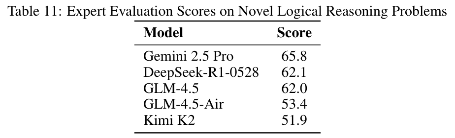
翻译的新范式。如今，翻译已超越简单的文本转换，还需要细致理解不断演变的网络用语、文化语境和领域专用术语：
网络用语：准确翻译“yyds”，需要识别出它是中文“永远的神”（yǒng yuǎn de shén）的首字母缩写，意为“the eternal god”，从而把握其中热情赞扬和钦佩的真实情感。
领域昵称：在摄影社群中，识别“胖”（字面意思为“fat white”）十分关键。专业翻译模型可能误译，但通用模型能理解它是“Canon EF 70-300mm f/4-5.6 IS USM”镜头的常见昵称，从而给出精确翻译。
符号：当中文用户在对话中发送一个“鱼”的 emoji 来指代二手交易市场时，模型能否理解其背后的文化梗，知道它指的是“闲鱼”（Xiányú）平台？这检验了模型将视觉符号与网络文化现象联系起来的认知能力。
深层语境推理：翻译“三花公主驾到，速来围观”，需要识别“三花”不是人名，而是指猫身上常见的三花毛色。通用模型能准确推断这一语境，将这句话地道地译为“The Calico Princess has arrived! Come and see!”。
这些例子凸显，现代翻译是一项深植于知识和推理的任务。
评测结果。我们选取当前工具经常误译的 100 个具有挑战性的真实案例，通过人工盲评比较 GLM-4.5 与专业翻译模型（Qwen-MT-plus、Qwen-MT-turbo、Seed-X [9]）。评分范围为 0–3 分，考虑意思是否准确传达、语言是否地道。结果见表 12。
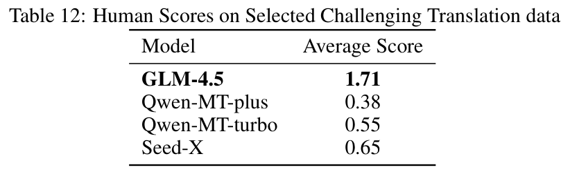
GLM-4.5 显著优于专业模型。例如，翻译“三花公主驾到”时，专业模型未能理解语境，而 GLM-4.5 能准确传达其中的地道含义。
本报告介绍了 GLM-4.5 模型系列，包括 GLM-4.5 和 GLM-4.5-Air。两个模型均采用 MoE 架构，相比以往 GLM 模型提高了计算效率。GLM-4.5 擅长推理、编码和 agent 任务，在全球开源与闭源模型中排名第三。我们发布 GLM-4.5 和 GLM-4.5-Air 的模型权重，以推动大语言模型的应用与研究。
贡献者姓名按名字的字母顺序排列。带星号（*）的姓名表示现已离开团队的成员。
Bin Chen, Chengxing Xie, Cunxiang Wang, Da Yin, Hao Zeng, Jiajie Zhang, Kedong Wang, Lucen Zhong, Mingdao Liu, Rui Lu, Shulin Cao, Xiaohan Zhang, Xuancheng Huang, Yao Wei, Yean Cheng, Yifan An, Yilin Niu, Yuanhao Wen, Yushi Bai, Zhengxiao Du, Zihan Wang (汪子涵), Zilin Zhu
Bohan Zhang, Bosi Wen, Bowen Wu, Bowen Xu*, Can Huang, Casey Zhao, Changpeng Cai, Chao Yu, Chen Li, Chendi Ge, Chenghua Huang, Chenhui Zhang, Chenxi Xu, Chenzheng Zhu, Chuang Li*, Congfeng Yin, Daoyan Lin, Dayong Yang, Dazhi Jiang, Ding Ai, Erle Zhu, Fei Wang, Gengzheng Pan, Guo Wang, Hailong Sun, Haitao Li, Haiyang Li, Haiyi Hu, Hanyu Zhang, Hao Peng, Hao Tai, Haoke Zhang, Haoran Wang, Haoyu Yang*, He Liu, He Zhao, Hongwei Liu, Hongxi Yan, Huan Liu, Huilong Chen, Ji Li, Jiajing Zhao, Jiamin Ren, Jian Jiao, Jiani Zhao, Jianyang Yan, Jiaqi Wang*, Jiayi Gui, Jiayue Zhao, Jie Liu, Jijie Li, Jing Li, Jing Lu, Jingsen Wang, Jingwei Yuan, Jingxuan Li, Jingzhao Du, Jinhua Du, Jinxin Liu, Junkai Zhi, Junli Gao, Ke Wang, Lekang Yang*, Liang Xu, Lin Fan, Lindong Wu, Lintao Ding, Lu Wang, Man Zhang, Minghao Li, Minghuan Xu, Mingming Zhao, Mingshu Zhai*, Pengfan Du, Qian Dong, Shangde Lei, Shangqing Tu, Shangtong Yang, Shaoyou Lu, Shijie Li, Shuang Li (李泷), Shuang Li (李爽), Shuxun Yang, Sibo Yi*, Tianshu Yu, Wei Tian, Weihan Wang, Wenbo Yu, Weng Lam Tam, Wenjie Liang, Wentao Liu, Xiao Wang*, Xiaohan Jia, Xiaotao Gu, Xiaoying Ling, Xin Wang, Xing Fan, Xingru Pan, Xinyuan Zhang, Xinze Zhang, Xiuqing Fu, Xunkai Zhang, Yabo Xu, Yandong Wu, Yida Lu, Yidong Wang, Yilin Zhou, Yiming Pan, Ying Zhang, Yingli Wang, Yingru Li, Yinpei Su, Yipeng Geng, Yitong Zhu, Yongkun Yang*, Yuhang Li, Yuhao Wu*, Yujiang Li, Yunan Liu, Yunqing Wang, Yuntao Li, Yuxuan Zhang, Zezhen Liu, Zhen Yang, Zhengda Zhou, Zhongpei Qiao, Zhuoer Feng, Zhuorui Liu, Zichen Zhang, Zihan Wang (王梓 汉), Zijun Yao, Zikang Wang, Ziqiang Liu, Ziwei Chai, Zixuan Li, Zuodong Zhao*
Aohan Zeng, Xin Lv, Qinkai Zheng, Zhenyu Hou
Jie Tang, Yuxiao Dong, Juanzi Li, Hongning Wang, Minlie Huang, Bin Xu, Jidong Zhai, Wenguang Chen
感谢来自北京、上海、天津、杭州、珠海和成都的所有支持。特别感谢我们的客户和社区开发者。
[1] A. Abbas, K. Tirumala, D. Simig, S. Ganguli, and A. S. Morcos. SemDedup：通过语义去重实现网络规模的数据高效学习. arXiv preprint arXiv:2303.09540, 2023.
[2] C. An, Z. Xie, X. Li, L. Li, J. Zhang, S. Gong, M. Zhong, J. Xu, X. Qiu, M. Wang, and L. Kong. Polaris：面向高级推理模型的强化学习规模化后训练方案, 2025.
[3] Y. Bai, X. Lv, J. Zhang, H. Lyu, J. Tang, Z. Huang, Z. Du, X. Liu, A. Zeng, L. Hou, et al. LongBench：用于长上下文理解的双语多任务基准. In Proceedings of the 62nd Annual Meeting of the Association for Computational Linguistics (Volume 1: Long Papers), pages 3119–3137, 2024.
[4] Y. Bai, S. Tu, J. Zhang, H. Peng, X. Wang, X. Lv, S. Cao, J. Xu, L. Hou, Y. Dong, J. Tang, and J. Li. LongBench v2：面向真实长上下文多任务的更深层理解与推理. In Proceedings of the 63rd Annual Meeting of the Association for Computational Linguistics (Volume 1: Long Papers), pages 3639–3664, Vienna, Austria, July 2025. Association for Computational Linguistics.
[5] M. Bavarian, H. Jun, N. Tezak, J. Schulman, C. McLeavey, J. Tworek, and M. Chen. 高效训练语言模型以进行中间填充, 2022.
[6] T. Brown, B. Mann, N. Ryder, M. Subbiah, J. D. Kaplan, P. Dhariwal, A. Neelakantan, P. Shyam, G. Sastry, A. Askell, et al. 语言模型是少样本学习器. Advances in neural information processing systems, 33:1877–1901, 2020.
[7] A. Chen, A. Li, B. Gong, B. Jiang, B. Fei, B. Yang, B. Shan, C. Yu, C. Wang, C. Zhu, et al. MiniMax-M1：通过 lightning attention 高效扩展测试时计算量. arXiv preprint arXiv:2506.13585, 2025.
[8] M. Chen, J. Tworek, H. Jun, Q. Yuan, H. P. D. O. Pinto, J. Kaplan, H. Edwards, Y. Burda, N. Joseph, G. Brockman, et al. 评测在代码上训练的大语言模型. arXiv preprint arXiv:2107.03374, 2021.
[9] S. Cheng, Y. Bao, Q. Cao, L. Huang, L. Kang, Z. Liu, Y. Lu, W. Zhu, Z. Huang, T. Li, et al. Seed-X：构建具有 7B 参数的强大多语言翻译 LLM. arXiv preprint arXiv:2507.13618, 2025.
[10] K. Deshpande, V. Sirdeshmukh, J. B. Mols, L. Jin, E.-Y. Hernandez-Cardona, D. Lee, J. Kritz, W. E. Primack, S. Yue, and C. Xing. MultiChallenge：对前沿 LLM 构成挑战的真实多轮对话评测基准. In Findings of the Association for Computational Linguistics: ACL 2025, pages 18632–18702, 2025.
[11] H. Ding, Z. Wang, G. Paolini, V. Kumar, A. Deoras, D. Roth, and S. Soatto. 减少截断可以改善语言建模. In Proceedings of the 41st International Conference on Machine Learning, pages 11030–11048, 2024.
[12] F. Gloeckle, B. Y. Idrissi, B. Rozière, D. Lopez-Paz, and G. Synnaeve. 通过多 token 预测获得更好、更快的大语言模型. arXiv preprint arXiv:2404.19737, 2024.
[13] D. Guo, D. Yang, H. Zhang, J. Song, R. Zhang, R. Xu, Q. Zhu, S. Ma, P. Wang, X. Bi, et al. DeepSeek-R1：通过强化学习激发 LLM 的推理能力. arXiv preprint arXiv:2501.12948, 2025.
[14] D. Hendrycks, C. Burns, S. Kadavath, A. Arora, S. Basart, E. Tang, D. Song, and J. Steinhardt. 使用 MATH 数据集衡量数学问题求解能力. In Thirty-fifth Conference on Neural Information Processing Systems Datasets and Benchmarks Track (Round 2).
[15] A. Henry, P. R. Dachapally, S. Pawar, and Y. Chen. transformer 的 query-key 归一化, 2020.
[16] C.-P. Hsieh, S. Sun, S. Kriman, S. Acharya, D. Rekesh, F. Jia, and B. Ginsburg. RULER：你的长上下文语言模型的真实上下文长度是多少？ In First Conference on Language Modeling.
[17] S. Hu, Y. Tu, X. Han, G. Cui, C. He, W. Zhao, X. Long, Z. Zheng, Y. Fang, Y. Huang, et al. MiniCPM：通过可扩展训练策略释放小语言模型的潜力. In First Conference on Language Modeling.
[18] A. Jaech, A. Kalai, A. Lerer, A. Richardson, A. El-Kishky, A. Low, A. Helyar, A. Madry, A. Beutel, A. Carney, et al. OpenAI o1 系统卡. arXiv preprint arXiv:2412.16720, 2024.
[19] N. Jain, K. Han, A. Gu, W.-D. Li, F. Yan, T. Zhang, S. Wang, A. Solar-Lezama, K. Sen, and I. Stoica. LiveCodeBench：对代码大语言模型进行全面且无污染的评测. In The Thirteenth International Conference on Learning Representations.
[20] C. E. Jimenez, J. Yang, A. Wettig, S. Yao, K. Pei, O. Press, and K. Narasimhan. SWE-bench：语言模型能否解决真实的 GitHub issue？ arXiv preprint arXiv:2310.06770, 2023.
[21] K. Jordan, Y. Jin, V. Boza, Y. Jiacheng, F. Cecista, L. Newhouse, and J. Bernstein. Muon：用于神经网络隐藏层的优化器, 2024. URL https://kellerjordan.github.io/posts/muon, 6.
[22] A. Joulin, E. Grave, P. Bojanowski, and T. Mikolov. 高效文本分类的实用技巧. In Proceedings of the 15th Conference of the European Chapter of the Association for Computational Linguistics: Volume 2, Short Papers, pages 427–431. Association for Computational Linguistics, April 2017.
[23] A. Liu, B. Feng, B. Xue, B. Wang, B. Wu, C. Lu, C. Zhao, C. Deng, C. Zhang, C. Ruan, et al. DeepSeek-V3 技术报告. arXiv preprint arXiv:2412.19437, 2024.
[24] J. Liu, J. Su, X. Yao, Z. Jiang, G. Lai, Y. Du, Y. Qin, W. Xu, E. Lu, J. Yan, et al. Muon 可扩展至 LLM 训练. arXiv preprint arXiv:2502.16982, 2025.
[25] M. Luo, S. Tan, J. Wong, X. Shi, W. Y. Tang, M. Roongta, C. Cai, J. Luo, L. E. Li, R. A. Popa, and I. Stoica. DeepScaleR：通过扩大 RL 规模，以 1.5B 模型超越 o1-preview. https://pretty-radio-b75.notion.site/DeepScaleR-Surpassing-O1-Preview-with-a-1-5B-Model-by-Scaling-RL-19681902c1468005bed8ca303013a4e2, 2025. Notion Blog.
[26] S. G. Patil, H. Mao, C. Cheng-Jie Ji, F. Yan, V. Suresh, I. Stoica, and J. E. Gonzalez. Berkeley 函数调用排行榜（BFCL）：从工具使用到大语言模型的 agent 评测. In Forty-second International Conference on Machine Learning, 2025.
[27] G. Penedo, H. Kydlíček, V. Sabolčec, B. Messmer, N. Foroutan, A. H. Kargaran, C. Raffel, M. Jaggi, L. Von Werra, and T. Wolf. FineWeb2：用一条流水线扩展所有语言——让预训练数据处理适应每种语言. arXiv preprint arXiv:2506.20920, 2025.
[28] L. Phan, A. Gatti, Z. Han, N. Li, J. Hu, H. Zhang, C. B. C. Zhang, M. Shaaban, J. Ling, S. Shi, et al. 人类最后的考试. arXiv preprint arXiv:2501.14249, 2025.
[29] Y. Qin, T. Zhang, Y. Shen, W. Luo, Y. Zhang, Y. Qiao, Z. Zhou, W. Zhang, B. CUI, et al. SysBench：LLM 能否遵循系统消息？ In The Thirteenth International Conference on Learning Representations, 2024.
[30] D. Rein, B. L. Hou, A. C. Stickland, J. Petty, R. Y. Pang, J. Dirani, J. Michael, and S. R. Bowman. GPQA：研究生水平、无法轻易通过 Google 搜索作答的问答基准. In First Conference on Language Modeling, 2024.
[31] Z. Shao, P. Wang, Q. Zhu, R. Xu, J. Song, X. Bi, H. Zhang, M. Zhang, Y. Li, Y. Wu, et al. DeepSeekMath：突破开放语言模型的数学推理极限. arXiv preprint arXiv:2402.03300, 2024.
[32] D. Su, K. Kong, Y. Lin, J. Jennings, B. Norick, M. Kliegl, M. Patwary, M. Shoeybi, and B. Catanzaro. Nemotron-CC：将 Common Crawl 转化为精炼的长周期预训练数据集. arXiv preprint arXiv:2412.02595, 2024.
[33] G. Team, R. Anil, S. Borgeaud, J.-B. Alayrac, J. Yu, R. Soricut, J. Schalkwyk, A. M. Dai, A. Hauth, K. Millican, et al. Gemini：高能力多模态模型系列. arXiv preprint arXiv:2312.11805, 2023.
[34] K. Team, Y. Bai, Y. Bao, G. Chen, J. Chen, N. Chen, R. Chen, Y. Chen, Y. Chen, Y. Chen, et al. Kimi K2：开放的 agent 智能. arXiv preprint arXiv:2507.20534, 2025.
[35] T. T.-B. Team. Terminal-Bench：终端环境中的 AI agent 基准, Apr 2025.
[36] M. Tian, L. Gao, S. Zhang, X. Chen, C. Fan, X. Guo, R. Haas, P. Ji, K. Krongchon, Y. Li, et al. SciCode：由科学家整理的科研编码基准. Advances in Neural Information Processing Systems, 37:30624–30650, 2024.
[37] H. Touvron, T. Lavril, G. Izacard, X. Martinet, M.-A. Lachaux, T. Lacroix, B. Rozière, N. Goyal, E. Hambro, F. Azhar, et al. LLaMA：开放且高效的基础语言模型. arXiv preprint arXiv:2302.13971, 2023.
[38] K. Vodrahalli, S. Ontanon, N. Tripuraneni, K. Xu, S. Jain, R. Shivanna, J. Hui, N. Dikkala, M. Kazemi, B. Fatemi, R. Anil, E. Dyer, S. Shakeri, R. Vij, H. Mehta, V. Ramasesh, Q. Le, E. Chi, Y. Lu, O. Firat, A. Lazaridou, J.-B. Lespiau, N. Attaluri, and K. Olszewska. Michelangelo：通过潜在结构查询开展超越大海捞针的长上下文评测, 2024.
[39] F. Wan, W. Shen, S. Liao, Y. Shi, C. Li, Z. Yang, J. Zhang, F. Huang, J. Zhou, and M. Yan. QwenLong-L1：通过强化学习迈向长上下文大推理模型. arXiv preprint arXiv:2505.17667, 2025.
[40] L. Wang, H. Gao, C. Zhao, X. Sun, and D. Dai. MoE 的无辅助损失负载均衡策略. arXiv preprint arXiv:2408.15664, 2024.
[41] S. Wang, L. Yu, C. Gao, C. Zheng, S. Liu, R. Lu, K. Dang, X. Chen, J. Yang, Z. Zhang, et al. 超越 80/20 法则：少数高熵 token 驱动有效的 LLM 推理强化学习. arXiv preprint arXiv:2506.01939, 2025.
[42] X. Wang, B. Li, Y. Song, F. F. Xu, X. Tang, M. Zhuge, J. Pan, Y. Song, B. Li, J. Singh, H. H. Tran, F. Li, R. Ma, M. Zheng, B. Qian, Y. Shao, N. Muennighoff, Y. Zhang, B. Hui, J. Lin, R. Brennan, H. Peng, H. Ji, and G. Neubig. OpenHands：将 AI 软件开发者构建为通用 agent 的开放平台. In The Thirteenth International Conference on Learning Representations, 2025.
[43] Y. Wang, X. Ma, G. Zhang, Y. Ni, A. Chandra, S. Guo, W. Ren, A. Arulraj, X. He, Z. Jiang, et al. MMLU-Pro：更稳健、更具挑战性的多任务语言理解基准. Advances in Neural Information Processing Systems, 37:95266–95290, 2024.
[44] J. Wei, N. Karina, H. W. Chung, Y. J. Jiao, S. Papay, A. Glaese, J. Schulman, and W. Fedus. 衡量大语言模型简短回答的事实性, 2024.
[45] J. Wei, Z. Sun, S. Papay, S. McKinney, J. Han, I. Fulford, H. W. Chung, A. T. Passos, W. Fedus, and A. Glaese. BrowseComp：简单却具有挑战性的浏览 agent 基准. arXiv preprint arXiv:2504.12516, 2025.
[46] Z. Xi, Y. Ding, W. Chen, B. Hong, H. Guo, J. Wang, D. Yang, C. Liao, X. Guo, W. He, et al. AgentGym：让基于大语言模型的 agent 在多样化环境中演进. arXiv preprint arXiv:2406.04151, 2024.
[47] A. Yang, A. Li, B. Yang, B. Zhang, B. Hui, B. Zheng, B. Yu, C. Gao, C. Huang, C. Lv, et al. Qwen3 技术报告. arXiv preprint arXiv:2505.09388, 2025.
[48] S. Yao, N. Shinn, P. Razavi, and K. Narasimhan. tau-bench：真实领域中的工具—agent—用户交互基准. arXiv preprint arXiv:2406.12045, 2024.
[49] Q. Yu, Z. Zhang, R. Zhu, Y. Yuan, X. Zuo, Y. Yue, W. Dai, T. Fan, G. Liu, L. Liu, et al. DAPO：大规模开源 LLM 强化学习系统. arXiv preprint arXiv:2503.14476, 2025.
[50] A. Zeng, X. Liu, Z. Du, Z. Wang, H. Lai, M. Ding, Z. Yang, Y. Xu, W. Zheng, X. Xia, et al. GLM-130B：开放的双语预训练模型. In The Eleventh International Conference on Learning Representations.
[51] Z. Zhang, L. Lei, L. Wu, R. Sun, Y. Huang, C. Long, X. Liu, X. Lei, J. Tang, and M. Huang. SafetyBench：使用选择题评测大语言模型的安全性. arXiv preprint arXiv:2309.07045, 2023.
[52] J. Zhou, T. Lu, S. Mishra, S. Brahma, S. Basu, Y. Luan, D. Zhou, and L. Hou. 大语言模型的指令遵循评测. arXiv preprint arXiv:2311.07911, 2023.